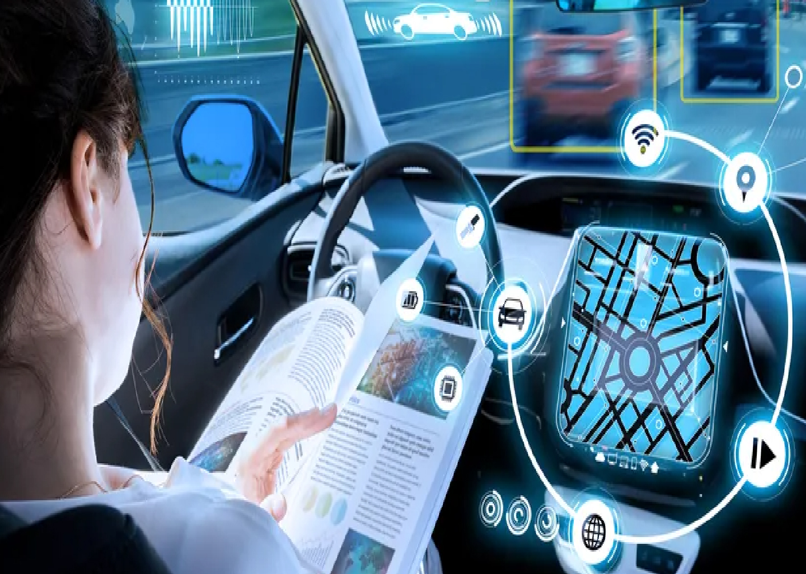
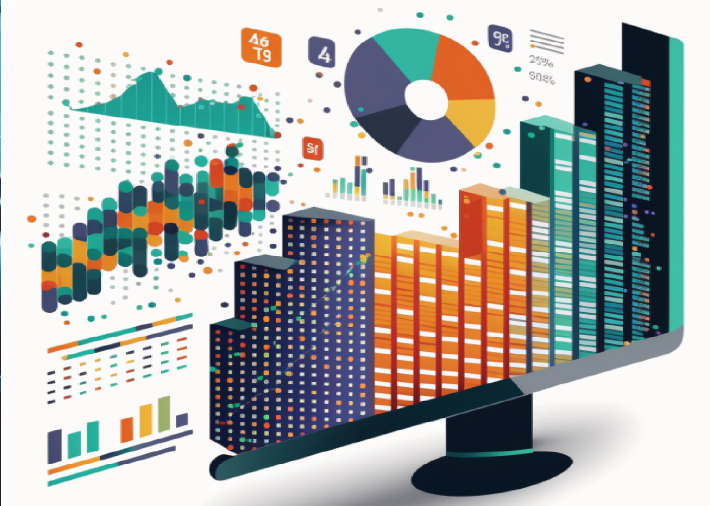

Yapay Zeka ve Makine Öğrenimi
Yapay Zeka (YA) ve Makine Öğrenimi (MO), bilgisayarların veri analizi, desen tanıma, dil işleme ve karar verme gibi alanlarda insan benzeri yetenekler kazanmasını sağlayan disiplinlerdir. Bu teknolojiler, günümüzde birçok endüstride önemli bir dönüşüm yaratmakta ve gelecekte daha da yaygınlaşması beklenmektedir. İnsan zekasının sınırlarını zorlayan bu alanlar, otomatik sürüş sistemlerinden sağlık hizmetlerine kadar geniş bir uygulama alanına sahiptir.

Yapay Zeka ve Makine Öğrenimi'nin temel prensipleri, bilgisayarların nasıl öğrenme sürecinden geçtiğini ve karmaşık problemleri nasıl çözebildiğini anlamak için kritik öneme sahiptir. Bu teknolojiler, büyük miktarda veriyi analiz ederek desenleri tanıyabilir, doğal dil işleme teknikleriyle metinleri anlayabilir ve karar verme süreçlerini optimize edebilir.
Uygulama Alanları
Uygulama alanlarına baktığımızda, yapay zeka ve makine öğrenimi otomatik sürüş sistemleri, sağlık teknolojileri, pazarlama analizleri, güvenlik sistemleri gibi birçok alanda kullanılmaktadır. Örneğin, bir otomatik sürüş aracı, çevresel verileri analiz ederek güvenli bir şekilde sürüş yapabilir ve kararlar alabilir. Sağlık teknolojilerinde ise, hasta verilerini analiz ederek teşhis ve tedavi süreçlerine katkı sağlayabilir.
Otomatik Sürüş Sistemleri
Otomatik sürüş sistemleri, yapay zeka ve makine öğrenimi algoritmalarının yoğun bir şekilde kullanıldığı alanlardan biridir. Bu sistemler, araçların çevresel verileri (kamera görüntüleri, radar verileri, lidar verileri vb.) analiz ederek güvenli bir şekilde sürüş yapmalarını sağlar. Örneğin, Tesla'nın otomatik pilot sistemi, yapay zeka sayesinde araçların kendi kendine sürüş yapmasını mümkün kılmaktadır. Bu sistemler, sürücülerin dikkatini dağıtabilecek durumları azaltarak yol güvenliğini artırmayı hedefler.
Sağlık Teknolojileri
Sağlık sektöründe yapay zeka ve makine öğrenimi, teşhis ve tedavi süreçlerinde devrim yaratmaktadır. Örneğin, radyoloji alanında yapay zeka, görüntü analizi yaparak doktorların daha hızlı ve doğru teşhis koymalarına yardımcı olabilir. Ayrıca, hastaların genetik verileri ve tıbbi geçmişi analiz edilerek kişiselleştirilmiş tedavi planları oluşturulabilir. Yapay zeka, ilaç keşfi sürecinde de önemli bir rol oynayarak, yeni ilaçların daha hızlı ve etkili bir şekilde geliştirilmesine katkı sağlar.
Pazarlama Analizleri
Pazarlama alanında yapay zeka ve makine öğrenimi, müşteri davranışlarını analiz ederek daha etkili pazarlama stratejileri geliştirilmesine yardımcı olur. Örneğin, Amazon ve Netflix gibi şirketler, yapay zeka algoritmaları sayesinde kullanıcıların önceki alışveriş ve izleme alışkanlıklarını analiz ederek kişiselleştirilmiş öneriler sunar. Bu, müşteri memnuniyetini artırırken, şirketlerin satışlarını ve karlılığını da yükseltir.
Güvenlik Sistemleri
Güvenlik alanında yapay zeka ve makine öğrenimi, tehditlerin tespit edilmesi ve önlenmesi konusunda büyük bir potansiyele sahiptir. Örneğin, siber güvenlikte yapay zeka, anormal ağ trafiğini tespit ederek potansiyel saldırıları önceden belirleyebilir. Fiziksel güvenlikte ise, güvenlik kameraları yapay zeka algoritmaları sayesinde şüpheli hareketleri algılayarak güvenlik görevlilerini uyarabilir.
Gelecekteki Potansiyeller
Görüldüğü gibi, yapay zeka ve makine öğrenimi teknolojileri, insan hayatını önemli ölçüde etkileyen ve gelecekte daha da önem kazanması beklenen alanlardır. Bu disiplinler üzerine daha fazla bilgi edinmek ve teknolojik gelişmeleri takip etmek, gelecekteki kariyer ve iş fırsatları açısından da önemli bir avantaj sağlayabilir. Örneğin, yapay zeka uzmanlarına olan talep hızla artmakta ve bu alanda uzmanlaşmış bireyler için geniş kariyer olanakları sunulmaktadır.
Bu yazıda, yapay zeka ve makine öğrenimi konularına genel bir bakış sunduk. Teknolojilerin temel prensipleri, uygulama alanları ve gelecekteki potansiyelleri üzerine detaylı bilgileri tartıştık. Daha fazla bilgi edinmek ve güncel gelişmeleri takip etmek için ilgili literatüre göz atabilir veya uzmanlarla görüşebilirsiniz.